1.准备工作
1.1 Git
相关地址
Git官网：https://git-scm.com/
Git官方文档：http://git-scm.com/docs
Git官方书：https://git-scm.com/book/zh/v2
Git下载：https://git-scm.com/downloads
下载Git
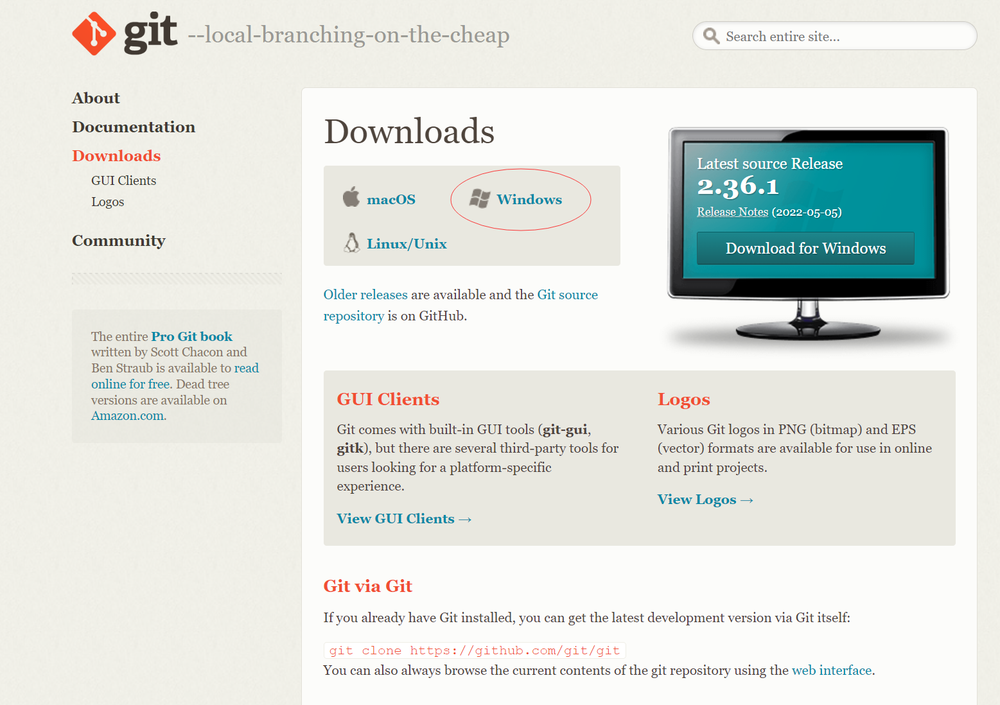
安装Git
一键安装/下载安装包
配置
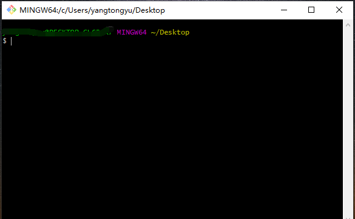
鼠标右击打开 Git Bash Here，配置：
1 | git config --global user.name 用户名 设置用户签名 |
基本命令
1 | (1) 获取与创建项目 |
1.2 Node.js
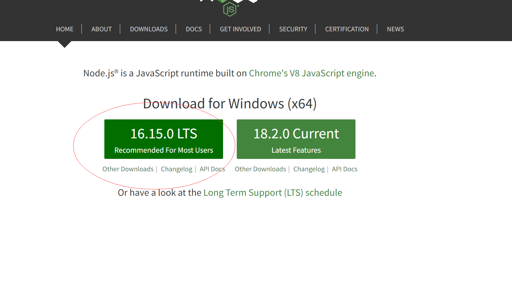
下载LTS版本（长期稳定版本）
安装
一直下一步，可以更改安装路径
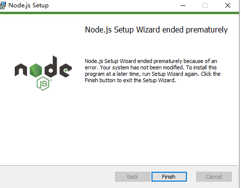
检验安装是否成功
- 以管理员方式打开命令行窗口
- node -v 查看node的版本
- npm -v 查看npm的版本(新版的node安装自带安装npm)
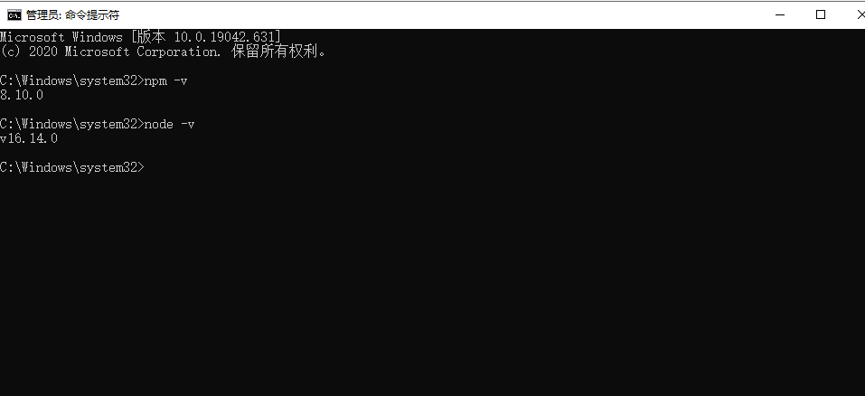
配置
- 配置全局安装的模块路径和缓存路径（不一定是安装路径）
- 在node.js文件夹,创建 node_global
- 在node.js文件夹,创建 node_cache
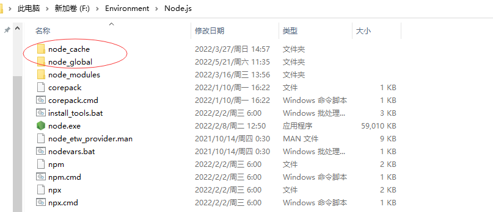
管理员身份- 打开cmd，配置路径
1
2npm config set prefix "F:\Environment\Node.js\node_global"
npm config set cache "F:\Environment\Node.js\node_cache"
配置环境变量
右键此电脑——属性——高级系统设置——高级——环境变量
新建系统变量
变量名：
NODE_PATH变量值：
F:\Environment\Node.js\node_modules(安装的路径，node_modules 文件夹 安装后就会有的)在系统变量中选择 Path 添加如下属性
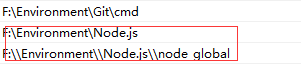
检测
全局安装最常用的 express 模块 进行测试
1 | npm install express -g |
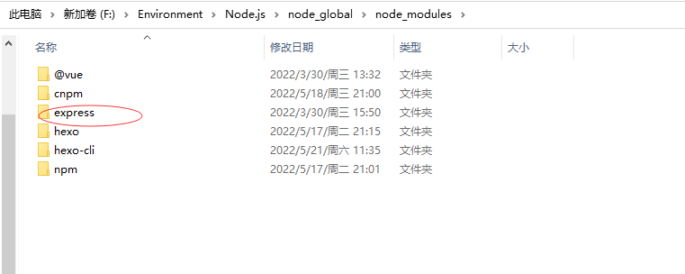
1.3 Hexo
- 前面git和node.js安装好后，就可以安装hexo了，先创建一个文件夹Blog，在这个文件夹下直接右键git bash打开。
- 安装hexo:如果Git Bash Here报错，则以管理员方式打开cmd,cd到此文件夹下，运行命令
1
npm install -g hexo-cli
- 初始化Blog
1
hexo init
- 然后,如果Git Bash Here报错，则以管理员方式打开cmd,cd到此文件夹下，运行命令
1
npm install
- 到此为止，Blog文件夹内目录有：
1
2
3
4
5
6
7
8
9
10
11node_modules: 依赖包
public：存放生成的页面
scaffolds：生成文章的一些模板
source：用来存放你的文章
themes：主题
_config.yml: 博客的配置文件 - 生成静态页面
1
hexo g
- 打开本地服务
1
hexo s
- 打开hexo的服务，在浏览器输入localhost:4000就可以看到生成的博客
2.上传GitHub
2.1 注册账号并创建仓库
注册GitHub账号
创建一个仓库
创建一个和你用户名相同的仓库，后面加.github.io，只有这样，将来要部署到GitHub page的时候，才会被识别，也就是username.github.io
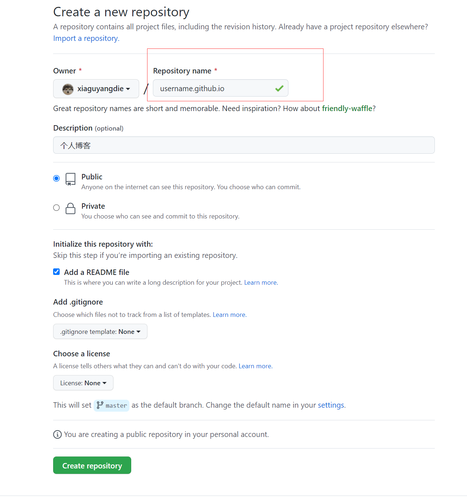
2.2 连接GitHUb
生成SSH添加到GitHub
回到你的git bash中
1
2git config --global user.name "yourname"
git config --global user.email "youremail"检查一下有没有输对
1
2git config user.name
git config user.email创建SSH,一路回车
1
ssh-keygen -t rsa -C "youremail"
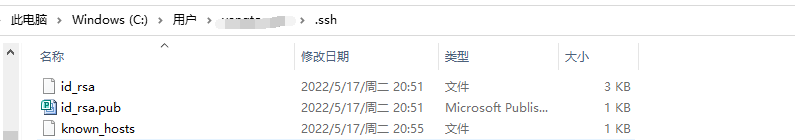
ssh，简单来讲，就是一个秘钥，其中，id_rsa是你这台电脑的私人秘钥，不能给别人看的，id_rsa.pub是公共秘钥，可以随便给别人看。把这个公钥放在GitHub上，这样当你链接GitHub自己的账户时，它就会根据公钥匹配你的私钥，当能够相互匹配时，才能够顺利的通过git上传你的文件到GitHub上
而后在GitHub的setting中，找到SSH keys的设置选项，点击
New SSH key把id_rsa.pub`里面的信息复制进去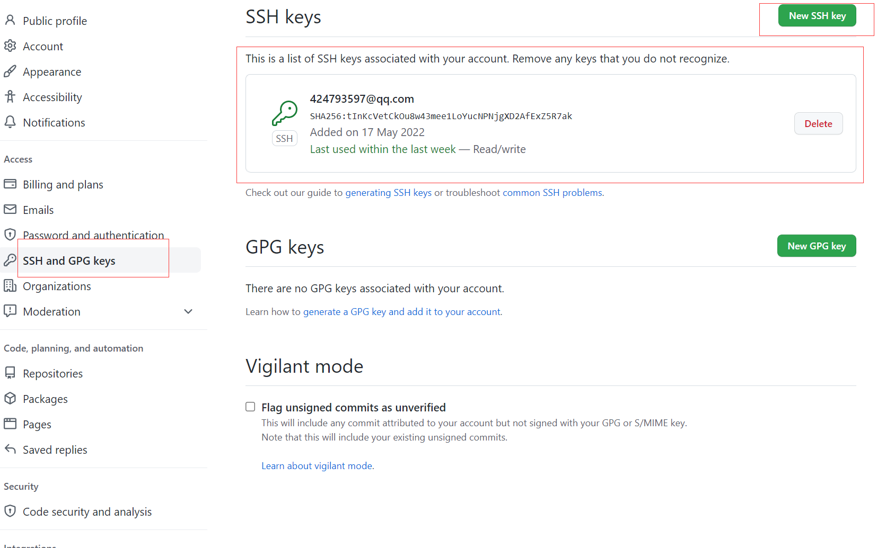
在gitbash中，查看是否成功
1
ssh -T git@github.com
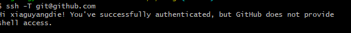
2.3 将hexo部署到GitHub
这一步，我们就可以将hexo和GitHub关联起来，也就是将hexo生成的文章部署到GitHub上，打开站点配置文件
_config.yml，翻到最后，修改为
1 | deploy: |
安装deploy-git ，也就是部署的命令,这样你才能用命令部署到GitHub,如果Git Bash Here报错，则以管理员方式打开cmd,cd到此文件夹下，运行命令
1
npm install hexo-deployer-git --save
清除之前生成的东西
1
hexo cl
生成静态文章
1
hexo g
部署文章
1
hexo d